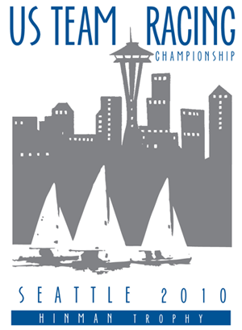

The Venue
Founded in 1892, Seattle Yacht Club (SYC) is located on Portage Bay, just off of Lake Washington in the center of Seattle.
Racing Venue
The event will be raced at the south end of Lake Union out of the Center for Wooden Boats. The race course is in the shadow of Seattle's Space Needle and is just minutes from SYC. Lake Union is just shy of 2 miles long and .75 miles wide. The lake is oriented north and south, the same as the two most common Seattle wind directions.
-->
View US Team Racing Champs 2010 in a larger map